Creating a Rocket
So now that we have the basics out of the way, lets try an example of
creating a graphic. For this we will create a rocket using an
excellent tutorial by Nicu Buculei which he has graciously made
available under the CC-BY-SA license, originally found at: http://howto.nicubunu.ro/rocket-inkscape/.
The target here is to produce something like this, not extremely
realistic but easily recognizable as a rocket and the most important,
fun (hopefully) and easy to create by someone who is using Inkscape for
the first time.

So start Inkscape and draw a rectangle, which must be more tall than
wide (we are drawing a rocket!) and have straight, not rounded corners.
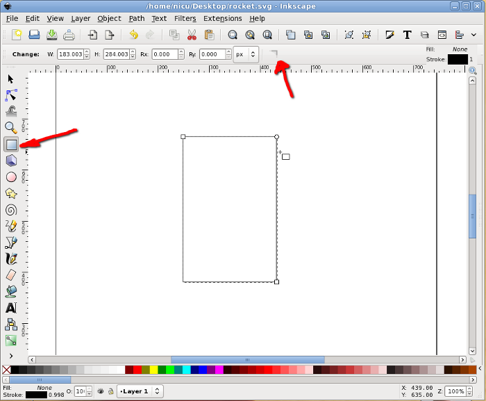
Then select it and convert to path, we will do node editing.

Now go in node editor and select the two top nodes. The following
operation can be done (as far as I know) only from keyboard: press Ctrl
+ Alt + > to enlarge the segment, the result should be a trapezium
with the big side up.

With the same two top nodes selected, add a new node in the middle of
their segment.

Select the new node (only it) and move it up (keep the Ctrl key pressed
to limit the movement to vertical only).
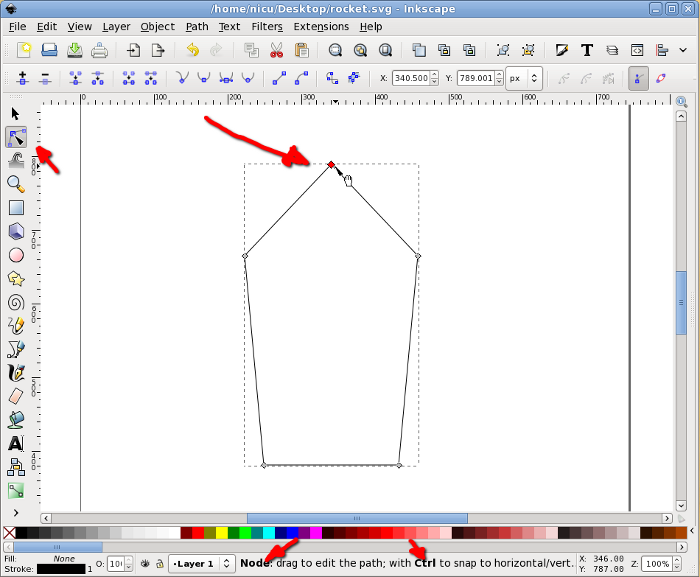
Select back the two nodes that were the top corners of the rectangle
and make them symmetric, for a shape starting to look like a
bullet/rocket.

To finish the bullet shape of the rocket body we need to make the
bottom edge rounded: select the two bottom corners, add a new node in
the middle, select it, move a bit up and made it symmetric, now we have
a bullet, an aerodynamic shape.
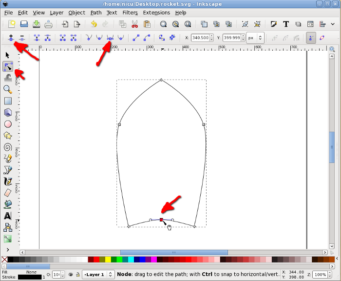
A rocket needs some "wings", so we will create another rectangle, this
time much smaller.

Select the rectangle and click on it once, this will put in in
rotate/skew mode so we need to skew it a bit my dragging on the arrow
on one of its edges.

Move it in position, next to the rocket body.

Again, in rotate/skew mode, rotate it a bit by dragging one of the
arrows at the corners, until we like the alignment. Note: no worry if
the alignment is not perfect, lower it under the body and when filled
with color this won't be noticeable.

Select the wing and duplicate it.
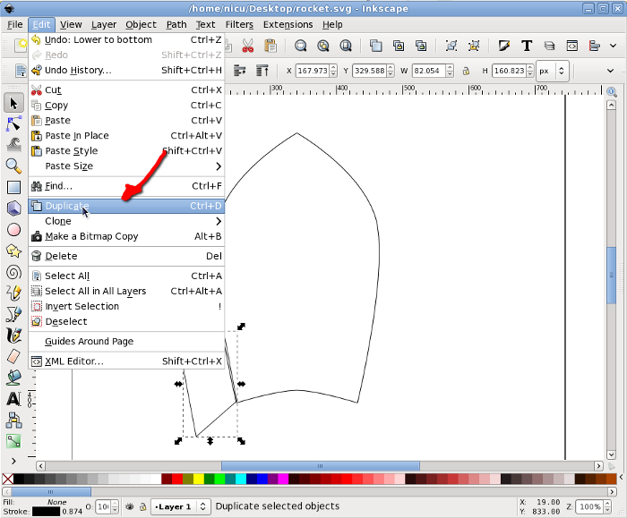
Flip the new (duplicate) wing horizontally and move it to the other
side of the rocket body (keep Ctrl pressed to limit the movement to
horizontal).

The wing facing us is another thin rectangle, with the same height as
the other wings (technically, we should have two rectangles, one for
each edge, but for now use one for simplicity). To center the new wing
to the rocket body, select it and the body, then use the Align and
Distribute dialog to align them horizontally relative to the biggest
item (the body).

Now you know what is needed for a funny rocket? A window, so the
astronauts inside can look at the space. Start by drawing a circle,
which will be the windows frame (I think I am boring repeating this,
but keep Ctrl pressed, so what you draw is a round circle not an
ellipse).
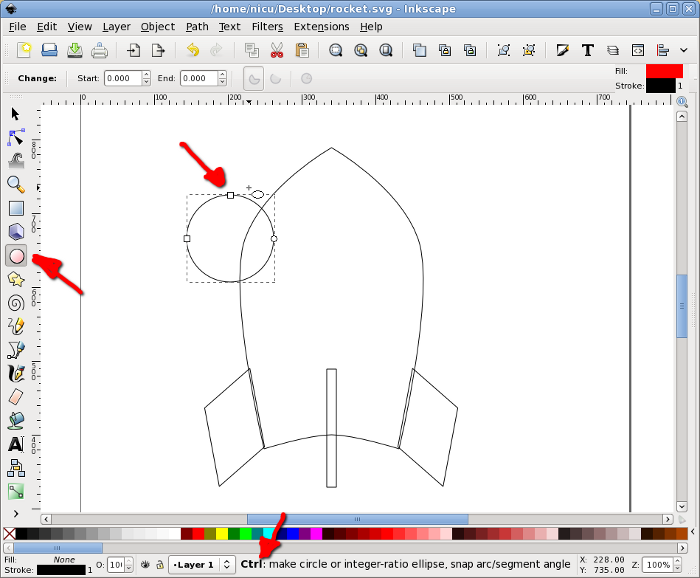
Select the circle and the rocket body and align vertically to the
center of the body.
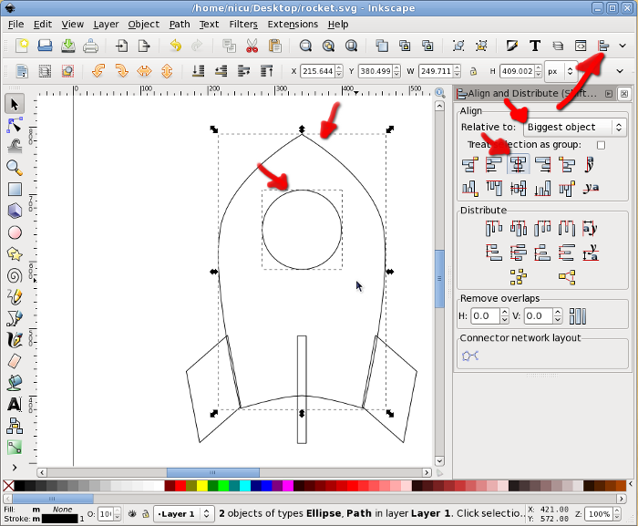
Another smaller circle will be the real window.

Select the two circles and align them horizontally and vertically.

Now color the items, using either the color palette at the bottom, the
Fill and Stroke button in the toolbar or any of the other possible ways
(there are quite a few). A rocket is usually silverish, so use shades
of gray.
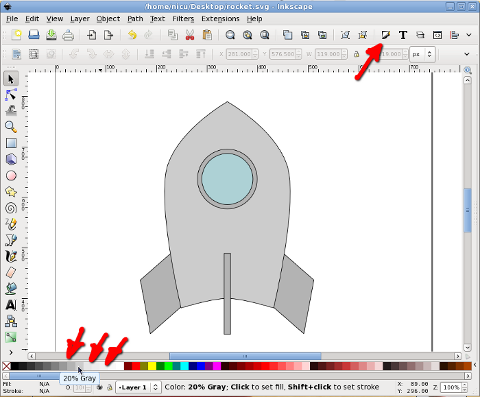
If you want the rocket less realistic but screaming "Fedora", make
those grays a bit bluish or go the extra mile and straightly use the
Fedora colors (light and dark blue).
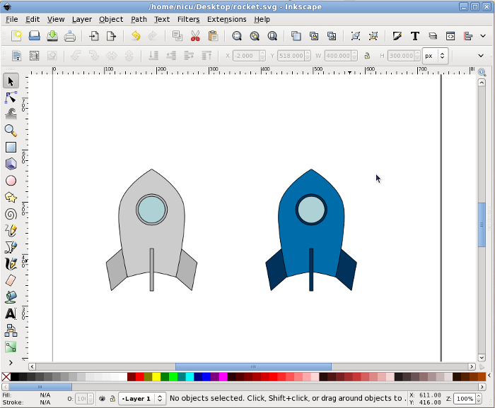
Back to our rocket, let's make it fly. Take the Bezier tool (pen) and
draw freely a few spikes, they will be the flame.
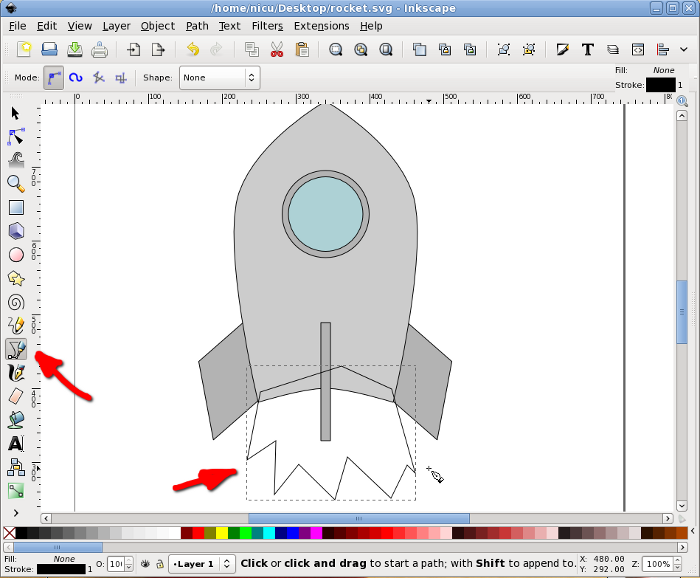
Color the flame red or a redish orange and lower it under the rocket
body.
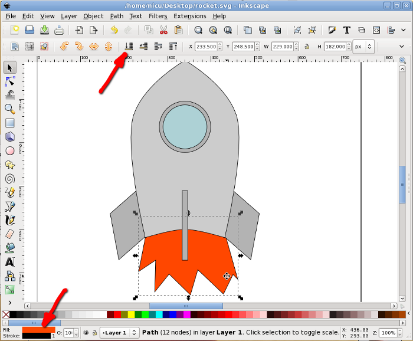
The core of the flame is supposed to be warmer, so let's draw a new set
of smaller spikes in yellow.

Optionally, if we want the rocket cruising, not just taking-off, select
everything and rotate a bit.
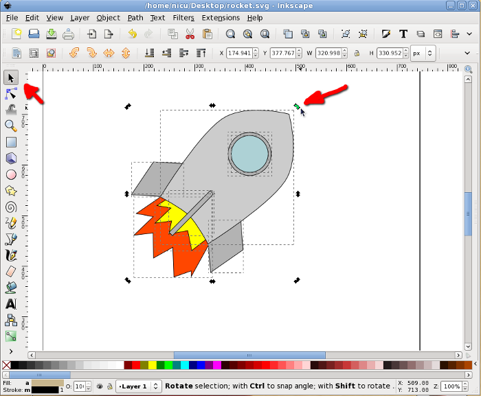
Prettyfication
A bit of beautification never hurt, so let's make the rocket a bit more
realistic (if you can call that "realistic") and less cartoon. Remove
the strokes (for example using the Fill and Stroke dialog) and use
silver gradients for all metallic surfaces, do this by using the
Gradient tool, dragging and editing colors.

Fill everything with gradients, including the flames and the window.
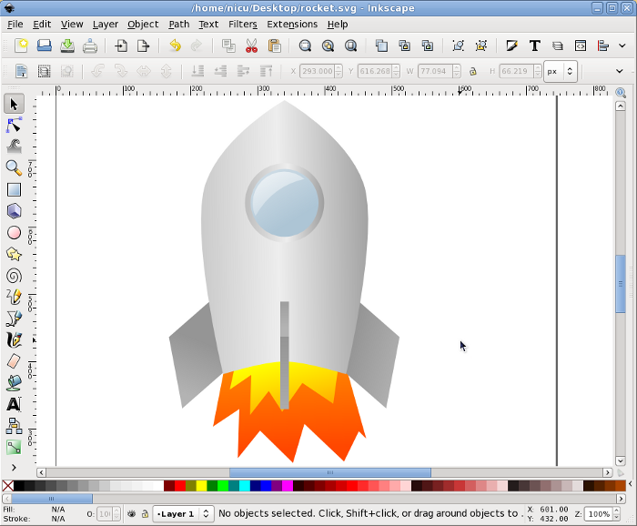
Select the inner (yellow) flame and using the Fill and Stroke dialog
Blur it a bit for a more realistic (and prettier) look.
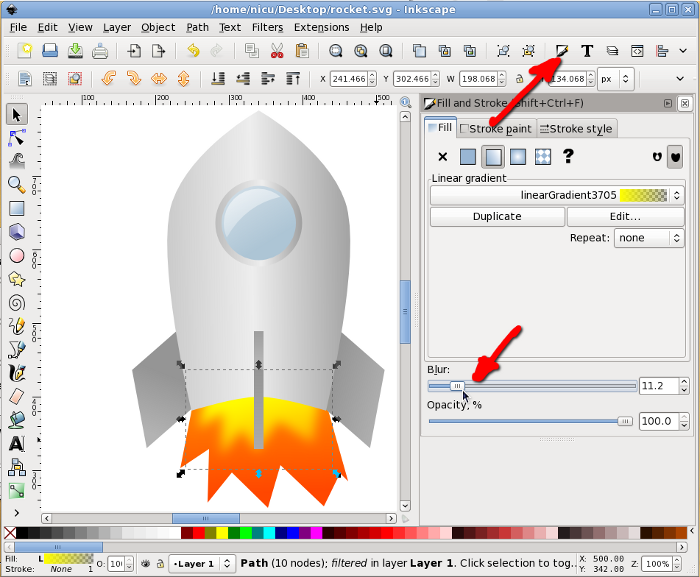
Blur also the outer (red/orange) flame. And that's about all.

Now our rocket can take-of and fly proudly. Go to the stars and beyond
them!
http://es.lipsum.com/

Congratulations, we've made it through a pretty advanced example from
start to finish!